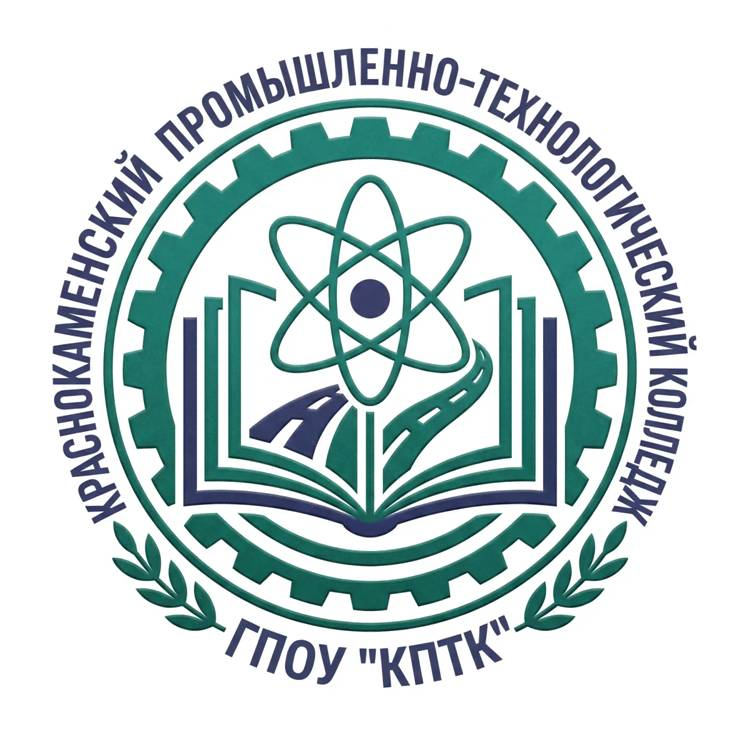

Оператор информационных систем и ресурсов — мы работаем с офисными программами, базами данных, документооборотом и информационными системами. Наша задача — делать работу офиса эффективной и организованной.

Word, Excel, PowerPoint, Outlook — уверенное владение на продвинутом уровне.
MS OfficeСоздание и ведение баз данных, работа с СУБД, запросы и отчёты.
Access / SQLЭлектронный документооборот, 1С:Документооборот, архивация.
СЭДЗащита информации, работа с антивирусами, безопасность сети.
InfoSecУчитель географии и биологии. Наш любимый классный руководитель — добрая, отзывчивая и всегда поддержит!